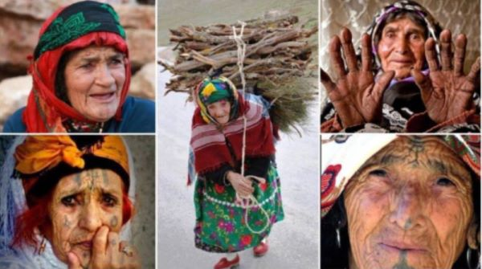
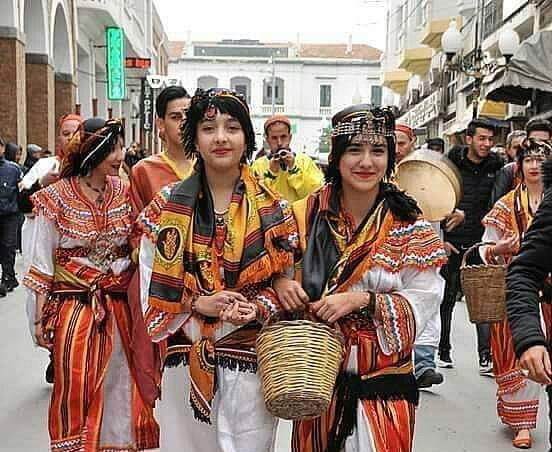

Introduction à la Culture Amazigh
La culture amazigh, également connue sous le nom de berbère, est l'une des plus anciennes et des plus riches d'Afrique du Nord. Les Amazighs, aussi appelés Berbères, sont les habitants autochtones de la région, avec une histoire qui remonte à plusieurs millénaires.
Les Amazighs ont développé une culture unique, marquée par leur langue, leurs traditions, et leurs coutumes. La langue amazighe, ou tamazight, est un élément central de leur identité culturelle, et elle est parlée dans plusieurs dialectes à travers le Maroc, l'Algérie, la Tunisie, la Libye, et les régions sahariennes.
La culture amazigh est également riche en arts, artisanat, musique et danse. Les tapis berbères, les bijoux en argent, et les poteries sont célèbres pour leur beauté et leur savoir-faire. Les musiques et danses traditionnelles, telles que l'ahwash et l'ahidous, sont des expressions vivantes de la culture amazigh.
Les Amazighs célèbrent plusieurs fêtes traditionnelles, dont Yennayer (le Nouvel An amazigh), et ont des coutumes agricoles et pastorales profondément enracinées dans leur mode de vie.
Ce site a pour but de partager et de promouvoir la richesse de la culture amazigh. Explorez les différentes sections pour en apprendre davantage sur l'histoire, les traditions, et les contributions des Amazighs à la diversité culturelle de l'Afrique du Nord et au-delà.